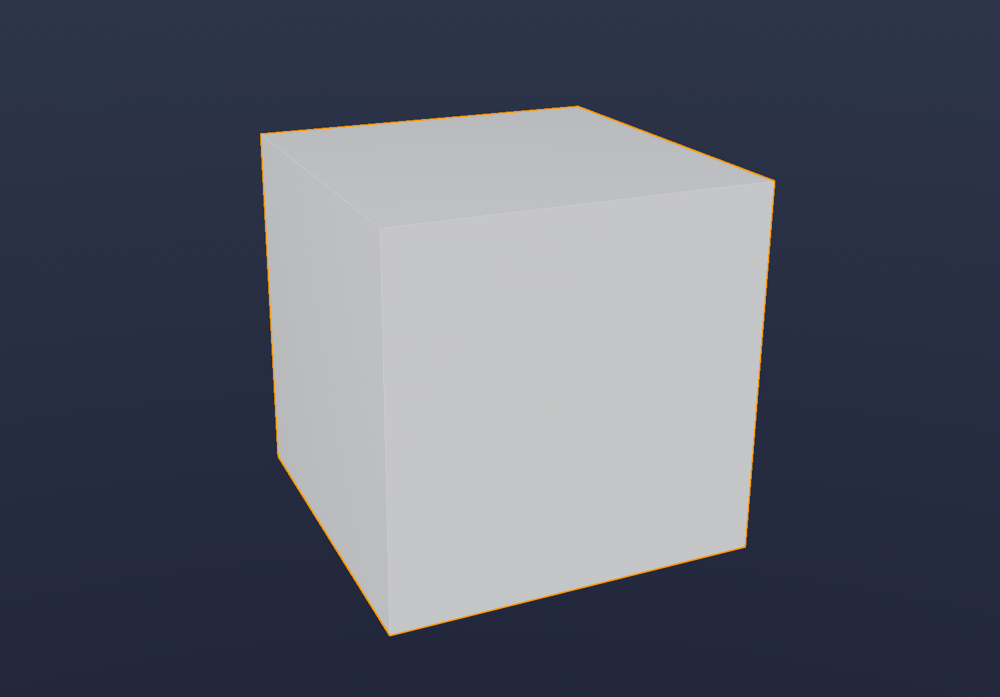
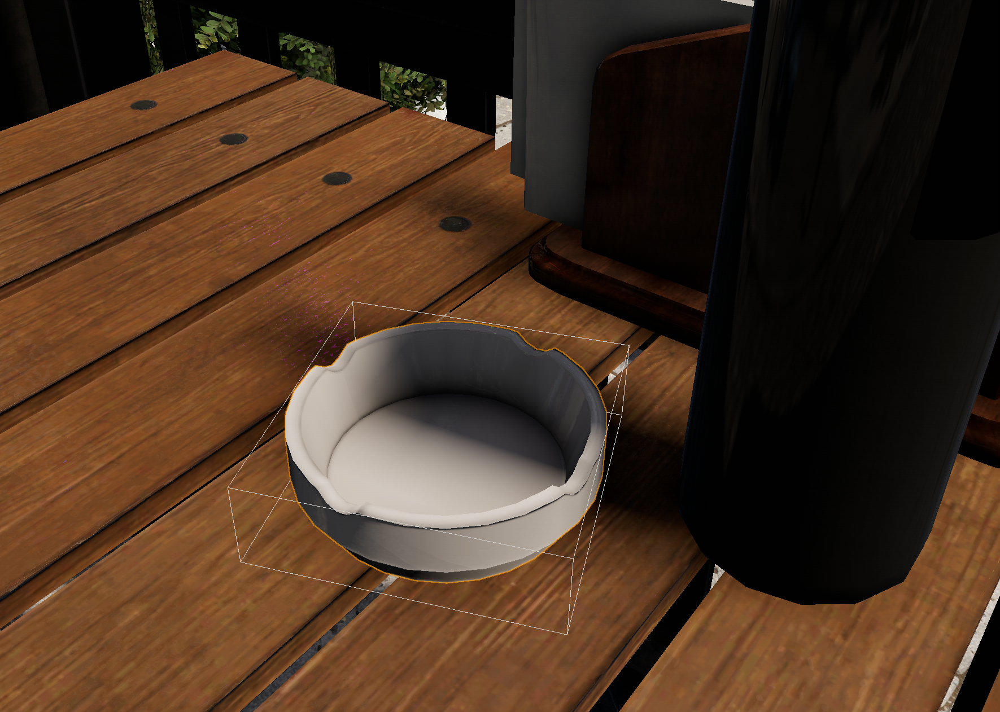
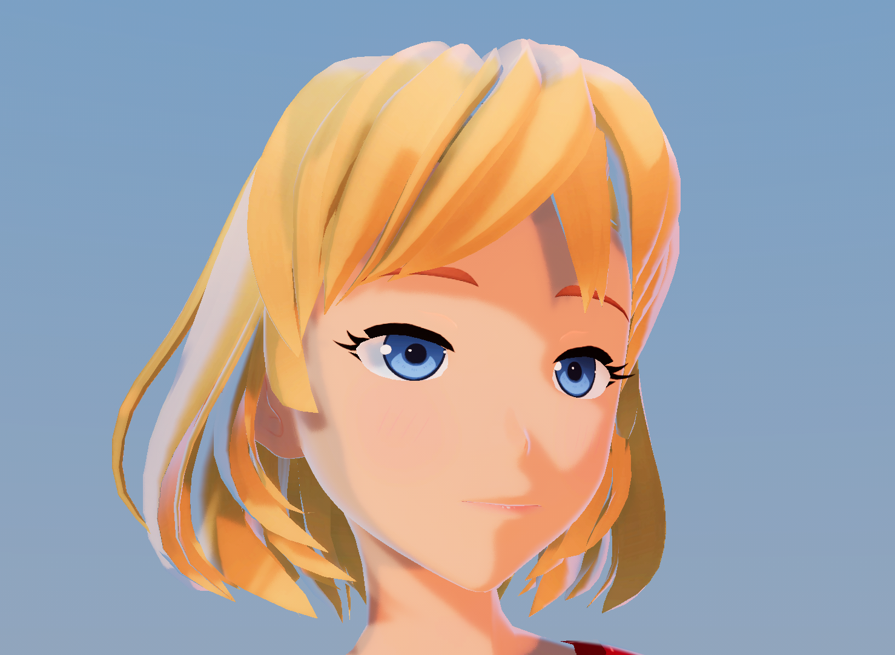

Dynamic vertex formats
There are a variety of ways to send vertex data to the GPU. Since DX12 and Vulkan, we can choose to use the old-school input layouts definitions in the pipeline state, or using descriptors, which became much more flexible since the DX11-era limitations. Wicked Engine has been using descriptors with bindless manual fetching for a while now, but still continues to find ways to achieve more fine-grained control. If you are interested in packing different kinds of vertex formats for more efficient memory storage for use by the GPU, you, my friend are at the right place, so read below.
Input Layout
The basic way of providing your vertex/instance data is through input layouts, which you specify at pipeline state creation on the CPU. The advantage of the input layouts is that they are quite flexible in how you arrange the data, because you can specify GPU data conversion formats (for example RGBA8_UNORM and many others), strides which let you decide between AOS (Array Of Structures) and SOA (Structure Of Arrays) memory layouts. You can also combine multiple buffers, and offsets when binding it to a draw call. The unfortunate thing is that you must specify this at pipeline creation time, so if you want to choose different precision formats for eg. positions or normals, you must create a pipeline permutation for it. Also, it loses some flexibility of modern rendering techniques like bindless, because you must be binding vertex buffers for every draw call that will be using input layouts. Or you could use one big buffer to store all your scene meshes combined inside it, that would be also quite nice, though more difficult to manage.
Descriptors
The more modern way of providing vertex/instance buffer data that gained traction with DX11 is to use descriptors (Shader Resource View or Unordered Access View) to shaders and use the SV_VertexID and SV_InstanceID autogenerated inputs directly in the vertex shader to access buffer elements. Simple example:
Buffer<float3> positions;
StructuredBuffer<float4x4> instances;
float4 main(uint vertexID : SV_VertexID, uint instanceID : SV_InstanceID) : SV_Position
{
float4 position = float4(positions[vertexID], 1);
position = mul(instances[instanceID], position);
position = mul(camera.ViewProjection, position);
return position;
}This way of providing data was enjoyed by many, because is simplifies graphics API setup, as you no longer need to create input layouts, just bind buffers with appropriate shader resource views. You can choose various buffer flavours:
- Buffer<T> : buffer with optional type conversion. You specify the buffer format with the graphics API
- StructuredBuffer<T> : raw buffer with structure stride, no type conversion, but can have more efficient memory loads than typed buffers. The structure stride is specified both in the shader and in graphics API (*)
- ByteAddressBuffer : raw buffer with uint stride (4 bytes). You can load any kind of structure from it in the shader code, with potentially lower performance than StructuredBuffer (StructuredBuffer load avoid some address computations in shaders, and has wider memory alignment which can utilize wider and less memory load operations). (**)
Here is a nice benchmark where you can check out the performance of different buffer types: sebbbi/perftest
I have an older blog about comparing performance of buffer types focusing on Input layout vs. descriptors. Probably not relevant anymore as it was made back in 2017. I have not made any comparisons lately as I haven’t been using input layouts since ages in the main rendering passes.
As you probably noticed, I put some stars to some of those buffer types, because they have something that is more flexible now in DX12/Vulkan than it was in DX11. Let’s see them:
- (*) to create structured buffer in DX11, you had to specify the structure stride in the buffer creation desc, not in the descriptor. This makes it less flexible than DX12/Vulkan, because you can only have a single type of structured buffer within one allocation. Not only that, you also need to supply the D3D11_RESOURCE_MISC_BUFFER_STRUCTURED flag at buffer creation which will prevent the creation of byte address and typed buffer descriptors. In DX12/Vulkan you are free to create one large buffer and place multiple structured descriptor ranges into it, you just have to make sure all of their offsets are aligned to their structure stride. You are even allowed to put typed and raw buffer views into the same buffer in DX12/Vulkan.
- (**) to create byte address buffers, you had to declare up front at buffer creation time that the buffer will be “raw” with D3D11_RESOURCE_MISC_BUFFER_ALLOW_RAW_VIEWS. This makes it unsupported for creating structured buffers too, although you can create typed buffers within it.
So now that DX12/Vulkan eliminated a lot of unfortunate limitations of DX11, you can design a more efficient vertex structure. In Wicked Engine, I started to mix and match different descriptor ranges within a single buffer since a while now. Namely, when a mesh is created, a single buffer allocation is made, and several descriptor ranges (views) are created within it:
- index buffer: Buffer<uint>, either R16_UINT or R32_UINT depending on how many vertices are in the mesh
- position-normal-wind: StructuredBuffer<float4> (it was also ByteAddressBuffer for a while). XYZ part is storing the positions, the W component is storing packed normal (R8G8B8_SNORM manually packed/unpacked) and wind weights (R8_UNORM, manually packed/unpacked)
- tangent: Buffer<float4>, with R8G8B8A8_SNORM format
- UV sets: Buffer<float4>, with R16G16B16A16_FLOAT format (to support up to 2 UV sets)
- Lightmap atlas UV: Buffer<float2>, with R16G16_FLOAT format
- Color: Buffer<float4>, with R8G8B8A8_UNORM format (sidenote: weirdly SRGB cannot be used for buffers even in DX12)
- Bone indices and weights: StructuredBuffer<Bone>, the Bone structure containing RGBA16_UINT indices and RGBA16_UNORM weights that the skinning shader will manually unpack
The buffer views are accessed in the shaders individually as separate buffers, however they all reside in a single buffer allocation. This makes it quite straight forward to provide them in a bindless manner too, just provide the descriptor indices to the shader somehow. In Wicked Engine I always use simple int values to represent descriptor indices. The -1 value has a special meaning, indicating non-existing descriptor, so the shader can even determine whether it wants to load from a buffer. It is useful, because not all the vertex properties are existing in a model, for example it is really common for a model to not have color, lightmap atlas or bone indices. Many times not even normals, tangents or UVs are necessary, for example depth-prepass or shadow rendering. A simplified example of how you could provide these buffer views for a mesh to a shader:
struct ShaderGeometry // part of a mesh, this structure can be shared with CPU code
{
int vb_pos_nor_wind;
int vb_col;
// ...
};
ConstantBuffer<ShaderGeomtry> geometry;
StructuredBuffer<float4> bindless_buffers_structured_float4[];
Buffer<float4> bindless_buffers_float4[];
struct VSOut
{
float4 position : SV_Position;
float4 color : COLOR;
};
VSOut main(uint vertexID : SV_VertexID)
{
StructuredBuffer<float4> buffer_pos_nor_wind = bindless_buffers_structured_float4[geometry.vb_pos_nor_wind];
float4 pos_nor_wind = buffer_pos_nor_wind[vertexID];
float3 pos = pos_nor_wind.xyz;
float3 normal = unpack_normal(pos_nor_wind.w);
float wind = unpack_wind(pos_nor_wind.w);
float4 color = 1;
[branch] if(geometry.vb_col >= 0)
{
color = bindless_buffers_float4[geometry.vb_col][vertexID];
}
VSOut Out;
Out.position = mul(camera.ViewProjection, float4(pos, 1));
Out.color = color;
return Out;
}For more details on the ideas behind bindless rendering and how to manage and get the int descriptor indices, check out my bindless descriptors blog.
All the vertex properties are separate arrays in this case, which could be slightly inefficient, compared to interleaving some properties that are frequently used together. I miss a way for typed buffers to specify a stride between elements that would make this possible the same way as input layouts (a console API supports this). Maybe it could be a thing for DirectX 13, who knows? The usual recommendation is to at least have a separate position buffer for lightweight passes such as prepass and shadows, but the other properties could be tied together like normal and tangent. For now you can choose to use StructuredBuffer and manual unpacking for those. However I chose the maximum flexibility that allows me to not have any or all of the property buffers (except position) and shader can skip loading from it based on branching.
Now I really liked this for a long while, but you may notice that we can improve this a bit with some tweaks to formats, to save some memory or improve precision. You can do quantization to achieve this. An other goal was to remove the remaining manual unpacking of formats in the shader code, which played together nicely with the quantization efforts.
Quantization
There is already some quantization happening, when packing normals, tangents and UVs. Normals and tangents in my experience are fine as-is, in 8 bit per channel UNORM formats, though the W channel for normals is wasted (could be repurposed). You could choose a more precise but unsigned format for it instead and do a signed conversion in the shader. But my focus this time was to reduce memory for the positions, and on the other hand also improve precision for UVs.
Positions:
To compress position data, I was looking at the following formats:
- R8G8B8A8_UNORM
- R10G10B10A2_UNORM
- R16G16B16A16_UNORM
- R16G16B16A16_FLOAT
The UNORM formats provide uniform precision, but only work within the [0,1] range. The 16-bit FLOAT format is working outside the [0,1] range, but generally provides bad precision for this purpose. After some testing, I decided to scrap the 16-bit FLOAT format and focus on the UNORM ones. These formats require a conversion into [0,1] range when uploading the data into the GPU buffers, and a back-conversion when accessing the data in the shader into the original range. Fortunately, the back-conversion is doable without requiring shader changes, by just appending the UNROM -> FLOAT conversion matrix in front of the instance world matrix on the CPU.
To convert the vertex positions into UNORM range, you first need to compute the axis-aligned bounding box (AABB) of the mesh by iterating over all the positions and min-maxing. After that, use the InverseLerp method to convert each position to [0,1] range:
float3 InverseLerp(float3 value1, float3 value2, float3 pos)
{
return value2 == value1 ? 0 : ((pos - value1) / (value2 - value1));
}That function will return a value between 0 and 1 if the pos argument is between the value1 and value2 arguments (basically the AABB’s min and max corners). To convert back to the original positions, you can use Lerp:
float3 Lerp(float3 value1, float3 value2, float3 pos)
{
return value1 + (value2 - value1) * pos;
}As I said, to back-convert in the shader it is possible to avoid manually using lerp and instead append the matrix that is equivalent to lerping within the AABB to the instance matrix:
XMMATRIX AABB::AABB::getUnormRemapMatrix() const
{
return
XMMatrixScaling(_max.x - _min.x, _max.y - _min.y, _max.z - _min.z) *
XMMatrixTranslation(_min.x, _min.y, _min.z)
;
}With that, the instance world matrix becomes:
XMMATRIX instanceMatrix = mesh.aabb.getUnormRemapMatrix() * object.worldMatrix;And thus the shader code can remain unchanged.
One extra step is that you need to convert the FLOAT coordinates that are in [0,1] range to UNORM integer values. This depends on the UNORM bit format, for example to convert to R8G8B8A8_UNORM, you would do this:
struct Vertex_POS8
{
uint8_t x;
uint8_t y;
uint8_t z;
uint8_t w;
void FromFULL(const wi::primitive::AABB& aabb, XMFLOAT3 pos, uint8_t wind)
{
pos = wi::math::InverseLerp(aabb._min, aabb._max, pos); // UNORM remap
x = uint8_t(pos.x * 255.0f);
y = uint8_t(pos.y * 255.0f);
z = uint8_t(pos.z * 255.0f);
w = wind;
}
};To make R10G10B10A2_UNORM, do this:
struct Vertex_POS10
{
uint32_t x : 10;
uint32_t y : 10;
uint32_t z : 10;
uint32_t w : 2;
void FromFULL(const wi::primitive::AABB& aabb, XMFLOAT3 pos, uint8_t wind)
{
pos = wi::math::InverseLerp(aabb._min, aabb._max, pos); // UNORM remap
x = uint32_t(pos.x * 1023.0f);
y = uint32_t(pos.y * 1023.0f);
z = uint32_t(pos.z * 1023.0f);
w = uint32_t((float(wind) / 255.0f) * 3);
}
};And similarly for R16G16B16A16_UNORM:
struct Vertex_POS16
{
uint16_t x;
uint16_t y;
uint16_t z;
uint16_t w;
void FromFULL(const wi::primitive::AABB& aabb, XMFLOAT3 pos, uint8_t wind)
{
pos = wi::math::InverseLerp(aabb._min, aabb._max, pos); // UNORM remap
x = uint16_t(pos.x * 65535.0f);
y = uint16_t(pos.y * 65535.0f);
z = uint16_t(pos.z * 65535.0f);
w = uint16_t((float(wind) / 255.0f) * 65535.0f);
}
};I found the R8G8B8A8_UNORM to be too low precision for positions and rarely passes for any mesh except simple cubes and stuff (when aiming for about a millimeter precision), but the R10G10B10A2_UNORM is a nice alternative that can work for small meshes. The precision of the wind weights (A channel) is largely reduced, but that’s not a problem usually as many meshes don’t have wind weights anyway. If there is larger precision requirement, we can simply fall back to RGBA16_UNORM or greater. But how to determine when we need larger precision? It is not a very good idea just to look at a couple models and determine this globally. We can dynamically choose an appropriate precision format per mesh. To determine the required precision, we can loop over all the positions, try to compress them, and then decompress and check the difference to the original value. If the decompressed and the original is within 1mm half-extent box, I deemed the conversion successful. But this has to be done for all vertices, and if any of them fail, then increase the compression precision to the next candidate. Example:
const float target_precision = 1.0f / 1000.0f; // millimeter
position_format = Vertex_POS10::FORMAT;
for (size_t i = 0; i < vertex_positions.size(); ++i)
{
const XMFLOAT3& pos = vertex_positions[i];
const uint8_t wind = vertex_windweights.empty() ? 0xFF : vertex_windweights[i];
if (position_format == Vertex_POS10::FORMAT)
{
Vertex_POS10 v;
v.FromFULL(aabb, pos, wind);
XMFLOAT3 p = v.GetPOS(aabb);
if (
std::abs(p.x - pos.x) <= target_precision &&
std::abs(p.y - pos.y) <= target_precision &&
std::abs(p.z - pos.z) <= target_precision &&
wind == v.GetWind()
)
{
// success, continue to next vertex with 8 bits
continue;
}
position_format = Vertex_POS16::FORMAT; // failed, increase to 16 bits
}
if (position_format == Vertex_POS16::FORMAT)
{
Vertex_POS16 v;
v.FromFULL(aabb, pos, wind);
XMFLOAT3 p = v.GetPOS(aabb);
if (
std::abs(p.x - pos.x) <= target_precision &&
std::abs(p.y - pos.y) <= target_precision &&
std::abs(p.z - pos.z) <= target_precision &&
wind == v.GetWind()
)
{
// success, continue to next vertex with 16 bits
continue;
}
position_format = vertex_windweights.empty() ? Vertex_POS32::FORMAT : Vertex_POS32W::FORMAT; // failed, increase to 32 bits
break; // since 32 bit is the max, we can bail out
}
}The code above starts with 10-bit precision, then increases to 16-bit if 10-bit was not enough, then lastly it can increase to RGB32_FLOAT (*) or RGBA32_FLOAT, depending on whether wind weight is required or not. Fortunately, we can reference both RGB and RGBA formats as well with Buffer<float4> descriptor in shaders, the W component will simply return 1 if the format is RGB. The 10-bit positions are usually accepted for meshes that have AABB extents smaller than a unit, and the 16-bit version is accepted for most meshes unless their AABB extents are huge. Huge AABB extents are usually coming from OBJ models in my experience, like the Sponza model I have has unnecessarily huge extents of the mesh, probably because of the difference in units in which the model was authored in. Even though all the meshes can be down-scaled by the instance matrices, that won’t help because the vertex positions are still blown up and fighting floating point precision.
- * Note that RGB32_FLOAT is special as it can’t have a typed RW buffer view for it. You can step around this issue by creating a RWByteAddressBuffer for it if needed.
For a faster method, you could also just check the AABB extents, and decide the chosen precision based on a worst-case guess, that way there is no need to loop through all positions.
Some examples when the 10-bit UNORM positions are accepted:



Note: if you combine the UNORM remap matrix with the instance matrices, then look out for transforming the normal vectors, you can no longer use the same instance matrix for normal transform that is used for position transform! This is not a huge problem, because the normals should use a slightly different matrix anyway, called the “inverse transpose” matrix. If you don’t know, the inverse transpose of the world matrix is needed when the world matrix contains non-uniform scaling to avoid shearing of the normals after transformation. So just have a dedicated normal transform matrix in the instance data and don’t forget to leave out the UNORM remapping matrix out of it.
Dynamic meshes
Dynamically changing vertices, like skinning, morph targets and particles are not a good fit for quantization. First of all in Wicked Engine they are all computed on the GPU, so you won’t get back an up to date AABB on the CPU for the current frame, which makes it difficult to quantize them to the AABB extents. You could run a pre-pass on GPU which computes the AABB and update the instance matrices, but that still doesn’t let you decide the acceptable precision before buffer creation. I made some tests with skinning and 16-bit FLOAT position format, and the slight wobbling on the animated vertices was very noticeable with slow animation movement, even with a small mesh.
For this reason, skinned, morphed meshes always use RGB32_FLOAT for the animated vertex positions, while they can keep using the smaller precision quantized positions for the rest-pose mesh. Particles have no rest pose, they just always use RGB32_FLOAT positions.
However, I have an other type of particle system, called "hair particle system" that is basically used for grass, as they are particles that stick to a mesh surface. Since the particles are defined to stick, a conservative AABB can be managed on the CPU side, which is basically the mesh AABB extended with the max particle length in every directions. Unless the mesh is skinned, in that case the hair particle will also use 32-bit FLOAT. Using RGBA16_UNORM for this type of particle system turned out to be good enough, without noticeable quality loss in their movement.
Connected meshes
For connected meshes, the quantization with the AABB will be a problem. Think about terrain chunk meshes for example, if they have RGBA16_UNORM positions, by themselves the precision can be acceptable. The problem comes from the fact that their AABBs are not consistent with each other, so the remapping from UNORM to AABB space will produce slightly inconsistent results too. This will be visible as small gaps between the chunk meshes. For this reason, I have an option for every mesh to disable quantization and use full precision FLOAT instead, which is automatically enabled for the terrain chunk generation.
Ray tracing
Ray tracing geometries have some requirements for what kind of position formats you can provide them. You can check here the exact list in the DX12 docs. You can see that RGB32_FLOAT is required to be supported on the base level, that's what you would usually use anyway. The UNORM formats however are only supported for Raytracing Tier 1.1, so watch out for that. Wicked Engine relies on Tier 1.1, so that wasn't a problem for me fortunately. If you don't support it, you could use some SNORM formats instead.
Look out that RGBA32_FLOAT is not one of the supported formats, so if you use that for the vertex positions and want to reuse it for ray tracing BLAS, then you will need to specify RGB32_FLOAT (without A channel) in the geometry desc, but with the stride of RGBA32_FLOAT.
The UNORM remapping will still work the same way for ray tracing as well, just make sure that you provide the same instance matrix for the ray tracing top level acceleration structure that has the UNORM remapping matrix included. But there is one small issue that I ran into: if any of the mesh AABB dimensions were 0, then the remapping matrix would contain zero scale on some axes, which ray tracing hardware treated as an invisible instance. This was not a problem with the rasterization path. To avoid this issue, I chose to artificially extend the AABB in the zero extent directions by floating point epsilon value, and it worked out fine:
if (IsFormatUnorm(position_format))
{
if (aabb._max.x - aabb._min.x < std::numeric_limits<float>::epsilon())
{
aabb._max.x += std::numeric_limits<float>::epsilon();
aabb._min.x -= std::numeric_limits<float>::epsilon();
}
if (aabb._max.y - aabb._min.y < std::numeric_limits<float>::epsilon())
{
aabb._max.y += std::numeric_limits<float>::epsilon();
aabb._min.y -= std::numeric_limits<float>::epsilon();
}
if (aabb._max.z - aabb._min.z < std::numeric_limits<float>::epsilon())
{
aabb._max.z += std::numeric_limits<float>::epsilon();
aabb._min.z -= std::numeric_limits<float>::epsilon();
}
}UV Coordinates
I was storing UV coordinates as 16-bit FLOAT format until now. While I haven't noticed any precision problems with it, it always bothered me as FP16 is known to be quite inaccurate, so much so that it starts to have texel size increments only at about 2048*2048 texture resolution. I wanted to try 16-bit UNORM for them too for this reason, to avoid any future headache. A similar idea applies as for positions, you need to get the AABB encompassing all texture coords and make the same remapping for them. The difference is that you don't usually supply a transformation matrix for UVs, so this will need to be handled with extra shader code. Instead of matrix transforming UVs, I decided to simply lerp them instead from [0,1] range to [min, max] AABB range. You could think that UVs are usually in [0,1] range, and usually that's true, but it is not a requirement. I had to go only as far as the Sponza model to see negative UVs for example. This is the case anyway if you want to open any model coming from the internet, otherwise I can imagine that some art teams could have the direction to forbid UV authoring outside [0,1] range and apply some scaling factor instead for repeating UVs.
Gains
The main thing you can gain from this technique is first and foremost memory savings. I was hoping for some extra performance improvement, but that wasn't the case, at least with my usual test assets. Not that I am surprised, the vertex memory traffic or the small amount of manual unpacking code was not really a bottleneck in my vertex shaders on the PC GPUs. Your mileage may vary on other platforms, I think on mobile it would be more relevant to pack vertices aggressively to lesser precision formats even from the performance perspective.
Final thoughts
Thank you for reading this far, friend! If you have any questions or feedback, let me know below in the comments. Also check out my sources of inspiration for this, which are:
- [Yosoygames blog] by Matías N. Goldberg
- Sebastian Aaltonen's tweets like [this]
Also, check out all the implementation in Wicked Engine (though in the future it can completely change)